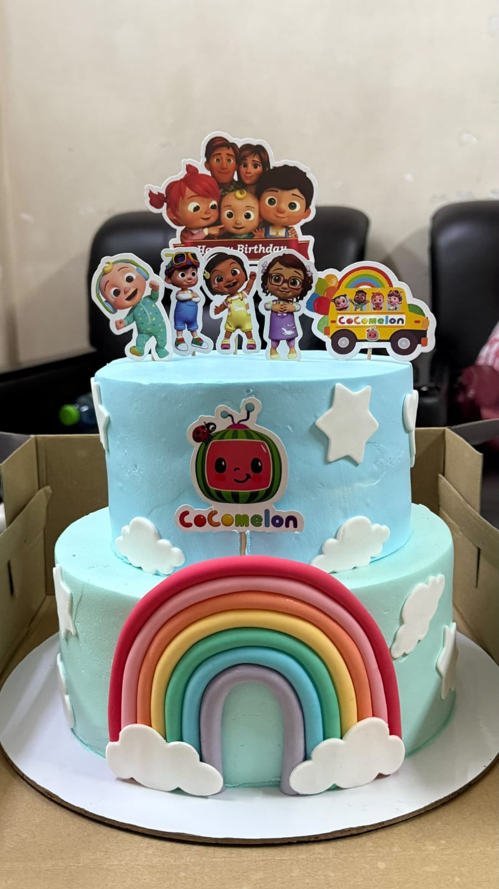
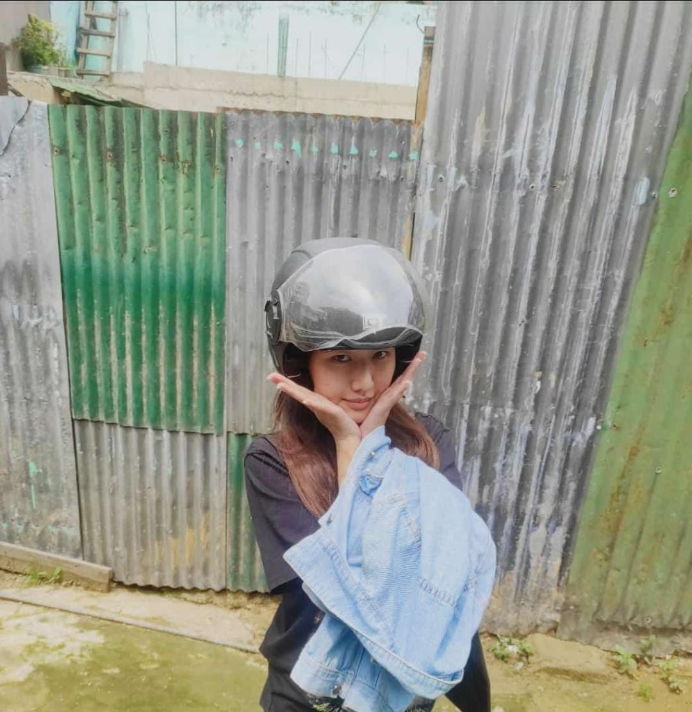
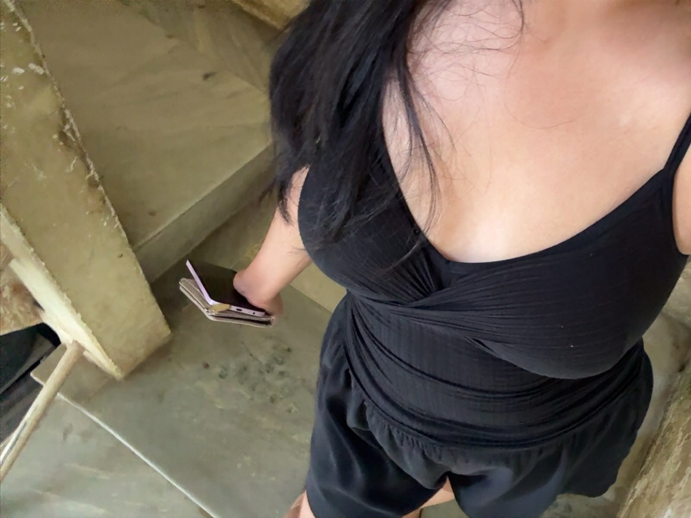
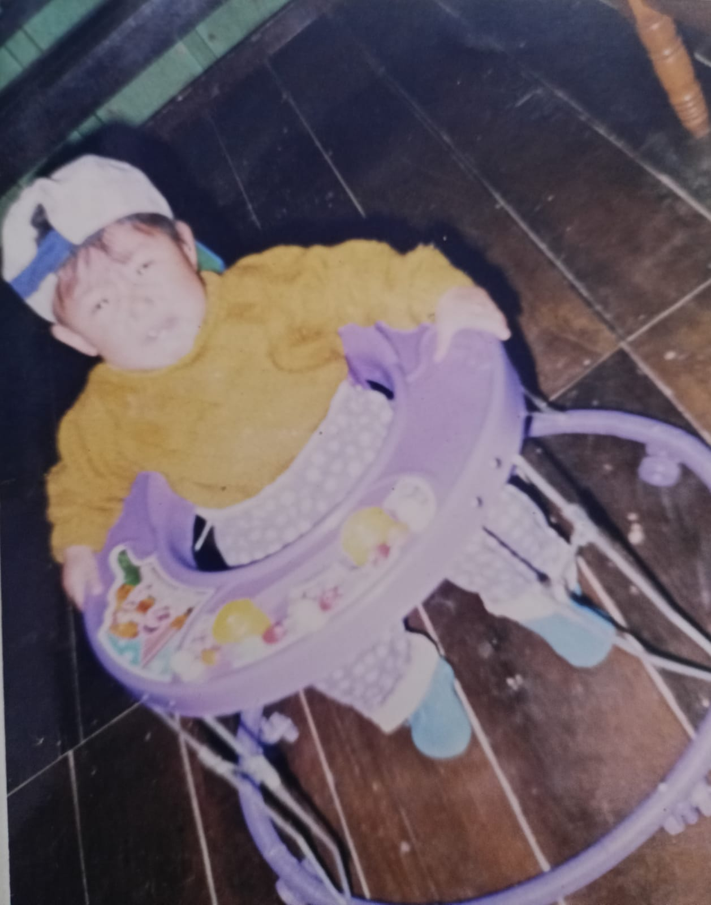

YOUR PHOTO HEREmedia/photo-1.jpg
01 / THE CREATIVE ONE
Made with her own kind of magic.
For the makeup looks, the little details, and the things you create.
THE BEGINNING
I made a little something for you.
Got a minute for me?
No pressure — just a tiny surprise if you're curious.

MADE WITH A LITTLE THOUGHT BEHIND IT ✦
THE LITTLE THINGS
A few things that made me think of you — your creativity, your favourite little obsessions, and the moments worth keeping.

YOUR PHOTO HEREFor the makeup looks, the little details, and the things you create.

YOUR PHOTO HERESome moments don't need a reason to be remembered.

YOUR PHOTO HEREBaskin-Robbins might as well save you a seat.
A MOMENT ON REPEAT
Your current fav song deserves its own little corner.
THE LAST SCENE
I don't know if I say this enough, but there's something about you that stands out to me.
Maybe it's the way you throw yourself into the things you love, your creative side, or simply the way you make ordinary moments feel a little less ordinary.
I notice more little things about you than you probably realise. Your favourite song, your coffee ice cream obsession, the things you create, and all those little details that make you you.
I made this because I wanted to give you something a little different. No special occasion, no big explanation. Just something made with you in mind.
And maybe, just maybe, you're a little more special to me than you think. ♡
— From me, with a little thought behind it.
END OF THE LITTLE SURPRISE ✦